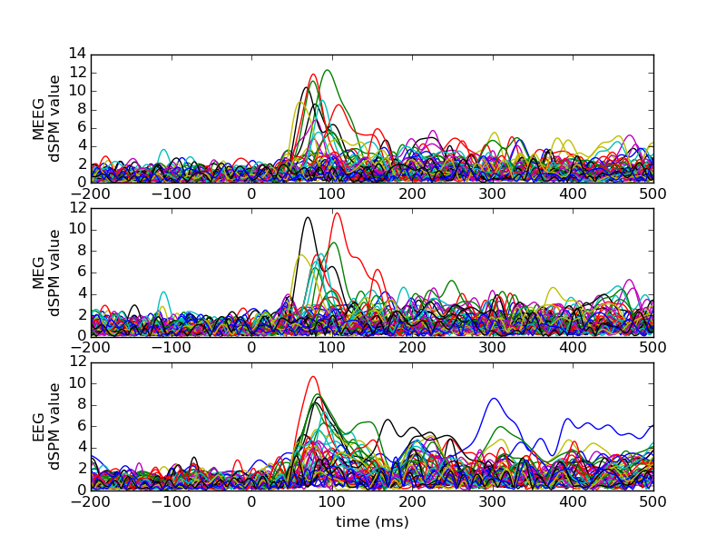

Assemble inverse operator and compute MNE-dSPM inverse solution¶
Assemble M/EEG, MEG, and EEG inverse operators and compute dSPM inverse solution on MNE evoked dataset and stores the solution in stc files for visualisation.
Script output:
Reading /data1/agramfort/work/src/mne-python/examples/MNE-sample-data/MEG/sample/sample_audvis-ave.fif ...
Read a total of 4 projection items:
PCA-v1 (1 x 102) active
PCA-v2 (1 x 102) active
PCA-v3 (1 x 102) active
Average EEG reference (1 x 60) active
Found the data of interest:
t = -199.80 ... 499.49 ms (Left Auditory)
0 CTF compensation matrices available
nave = 55 - aspect type = 100
Projections have already been applied. Setting proj attribute to True.
Applying baseline correction ... (mode: mean)
Reading forward solution from /data1/agramfort/work/src/mne-python/examples/MNE-sample-data/MEG/sample/sample_audvis-meg-eeg-oct-6-fwd.fif...
Reading a source space...
Computing patch statistics...
Patch information added...
Distance information added...
[done]
Reading a source space...
Computing patch statistics...
...
Python source code: plot_make_inverse_operator.py
# Author: Alexandre Gramfort <alexandre.gramfort@telecom-paristech.fr>
#
# License: BSD (3-clause)
import matplotlib.pyplot as plt
import mne
from mne.datasets import sample
from mne.minimum_norm import (make_inverse_operator, apply_inverse,
write_inverse_operator)
print(__doc__)
data_path = sample.data_path()
fname_fwd_meeg = data_path + '/MEG/sample/sample_audvis-meg-eeg-oct-6-fwd.fif'
fname_fwd_eeg = data_path + '/MEG/sample/sample_audvis-eeg-oct-6-fwd.fif'
fname_cov = data_path + '/MEG/sample/sample_audvis-shrunk-cov.fif'
fname_evoked = data_path + '/MEG/sample/sample_audvis-ave.fif'
snr = 3.0
lambda2 = 1.0 / snr ** 2
# Load data
evoked = mne.read_evokeds(fname_evoked, condition=0, baseline=(None, 0))
forward_meeg = mne.read_forward_solution(fname_fwd_meeg, surf_ori=True)
noise_cov = mne.read_cov(fname_cov)
# Restrict forward solution as necessary for MEG
forward_meg = mne.pick_types_forward(forward_meeg, meg=True, eeg=False)
# Alternatively, you can just load a forward solution that is restricted
forward_eeg = mne.read_forward_solution(fname_fwd_eeg, surf_ori=True)
# make an M/EEG, MEG-only, and EEG-only inverse operators
info = evoked.info
inverse_operator_meeg = make_inverse_operator(info, forward_meeg, noise_cov,
loose=0.2, depth=0.8)
inverse_operator_meg = make_inverse_operator(info, forward_meg, noise_cov,
loose=0.2, depth=0.8)
inverse_operator_eeg = make_inverse_operator(info, forward_eeg, noise_cov,
loose=0.2, depth=0.8)
write_inverse_operator('sample_audvis-meeg-oct-6-inv.fif',
inverse_operator_meeg)
write_inverse_operator('sample_audvis-meg-oct-6-inv.fif',
inverse_operator_meg)
write_inverse_operator('sample_audvis-eeg-oct-6-inv.fif',
inverse_operator_eeg)
# Compute inverse solution
stcs = dict()
stcs['meeg'] = apply_inverse(evoked, inverse_operator_meeg, lambda2, "dSPM",
pick_ori=None)
stcs['meg'] = apply_inverse(evoked, inverse_operator_meg, lambda2, "dSPM",
pick_ori=None)
stcs['eeg'] = apply_inverse(evoked, inverse_operator_eeg, lambda2, "dSPM",
pick_ori=None)
# Save result in stc files
names = ['meeg', 'meg', 'eeg']
for name in names:
stcs[name].save('mne_dSPM_inverse-%s' % name)
###############################################################################
# View activation time-series
plt.close('all')
plt.figure(figsize=(8, 6))
for ii in range(len(stcs)):
name = names[ii]
stc = stcs[name]
plt.subplot(len(stcs), 1, ii + 1)
plt.plot(1e3 * stc.times, stc.data[::150, :].T)
plt.ylabel('%s\ndSPM value' % str.upper(name))
plt.xlabel('time (ms)')
plt.show()
Total running time of the example: 23 seconds